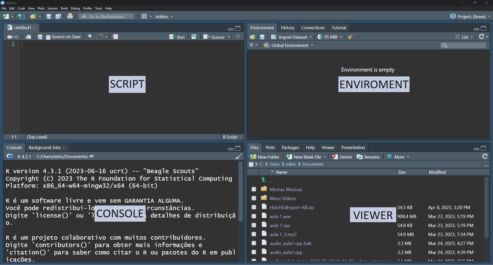

2 Installation
2.1 Installing R and Rstudio
To install R, go to the official R website: https://www.r-project.org/ and follow these steps based on your operating system:
2.1.1 On Windows
- In the left menu, select “CRAN.”
- Choose the “Download R for Windows” option.
- Select the “base” option.
- On the following page, choose the CRAN mirror closest to your location.
- Download the latest version (e.g., “R-x.x.x for Windows”).
- Double-click the downloaded file and follow the installation instructions.
2.1.2 On Linux
- In the left menu, select “CRAN.”
- Choose the “Download R for Linux” option.
- Select the CRAN mirror closest to your location.
- Choose the link for your specific distribution.
- Follow the instructions provided on the page to install R.
2.1.3 On macOS
- In the left menu, select “CRAN.”
- Choose the “Download R for (Mac) OS X” option.
- Select the CRAN mirror closest to your location.
- Choose the version you want (usually the latest version with a filename like “R-x.x.x.pkg”).
- Double-click the downloaded file and follow the installation instructions.
2.2 Installing Rstudio
To install RStudio on Windows, follow these steps:
Visit the RStudio downloads page by clicking on the link below:
Download the version that matches your operating system from the “All Installers” list.
Double-click the file you downloaded from the RStudio page and follow the installation instructions.
2.3 Integrated Development Environments (IDEs)
2.3.1 The Rstudio IDE
Integrated Development Environments (IDEs) play a crucial role in programming, providing an interactive and organized environment for developers. In the realm of the R programming language, one of the most popular IDEs is RStudio.

RStudio is an open-source IDE specifically designed for R. It offers several key components:
RStudio Interface:
- Console: Execute R commands interactively.
- Script Editor: Write and edit R scripts with syntax highlighting and code suggestions.
- Environment and History: Monitor variables and functions, review command history.
- Plots and Visualizations: View interactive graphics generated from your code.
Project Concept: RStudio encourages the use of projects to organize your data analysis or R development work. A project is an isolated workspace that contains all project-related files, scripts, data, and settings, enhancing organization and collaboration.
R Scripts: R scripts are files containing R code for batch or interactive execution. Create and edit R scripts directly in RStudio, with integrated variable and object management.
RData Files: RData files are native R data files used to save and load R objects (e.g., data frames, lists, variables) for reuse in R sessions.
RStudio is a powerful and versatile IDE for R, catering to data scientists, analysts, and developers. Its user-friendly interface and integrated features enhance productivity and efficiency in data analysis and statistical programming.
2.3.2 Cheat Sheets
When it comes to learning more about RStudio and various R libraries, an invaluable resource at your disposal is the cheat sheets.
In RStudio, cheat sheets are available to provide concise summaries on how to utilize a range of packages, including insights into the functionality of RStudio itself. To access these cheat sheets, simply follow these steps:
Launch RStudio.
Navigate to the “Help” menu located in the top menu bar of the window.
Within the “Help” menu, you’ll discover an option labeled “Cheat Sheets.” Click on this option.
This action will present you with a selection of available cheat sheets. Choose the one that is pertinent to the package or subject matter you wish to delve into.
Click on the specific cheat sheet of your choice to open it. It will be displayed in a new browser tab or in a PDF viewer, depending on your RStudio’s configuration.
These cheat sheets contain succinct information and valuable insights on how to effectively utilize a variety of R features and specific packages. They serve as an excellent resource for swift reference and efficient learning.